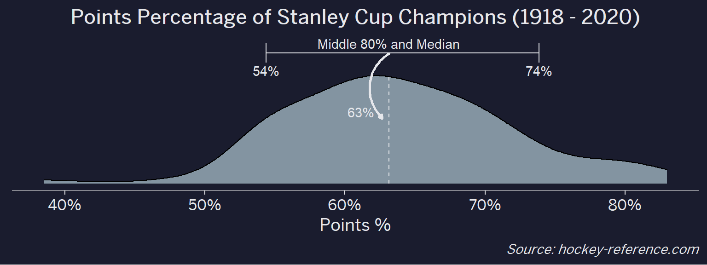

Visualizations
The Overall Distribution of Points Percentage for NHL Stanley Cup Champions
This code block is a doozy as I did a lot of annotations to add error bars, text labels, arrows, and theme formatting to change what at its heart is a standard density plot.
nhl_w_color %>%
ggplot(aes(x = pts_pct)) +
geom_density(fill = '#8394A1') +
annotate("errorbarh",
xmin = quantile(nhl_w_color$pts_pct, .10),
xmax = quantile(nhl_w_color$pts_pct, .90),
y = 6,
color = "#e6e7eb") +
annotate("linerange",
x = median(nhl_w_color$pts_pct),
ymin = 0,
ymax = 5,
color = "#e6e7eb",
lty = 2
) +
annotate("text",
label = "Middle 80% and Median",
y = 6.45,
x = median(nhl_w_color$pts_pct),
color = "#e6e7eb") +
annotate("text",
label = quantile(nhl_w_color$pts_pct, .10) %>%
scales::percent(accuracy = 1),
y = 5.2,
x = quantile(nhl_w_color$pts_pct, .10),
color = "#e6e7eb") +
annotate("text",
label = quantile(nhl_w_color$pts_pct, .90) %>%
scales::percent(accuracy = 1),
y = 5.2,
x = quantile(nhl_w_color$pts_pct, .90),
color = "#e6e7eb") +
geom_curve(
x = median(nhl_w_color$pts_pct),
xend = median(nhl_w_color$pts_pct)-.005,
y = 6,
yend = 3,
color = "#e6e7eb",
arrow = arrow(length = unit(0.03, "npc")),
size = 1
) +
annotate("text", x = median(nhl_w_color$pts_pct)-.02, y = 3.3,
label = median(nhl_w_color$pts_pct) %>%
scales::percent(accuracy = 1),
color = "#e6e7eb") +
labs(title = "Points Percentage of Stanley Cup Champions (1918 - 2020)",
caption = "*Source: hockey-reference.com*",
x = "Points %",
y = ""
) +
scale_x_continuous(labels = scales::percent_format(accuracy = 1)) +
cowplot::theme_cowplot() +
theme(
text = element_text(color = "#e6e7eb", family = 'BentonSans Regular'),
plot.background = element_rect(fill = "#1a1c2e"),
axis.text = element_text(color = "#e6e7eb"),
axis.ticks = element_line(color = "#e6e7eb"),
axis.line = element_line(color = "#878890"),
plot.caption = element_markdown(),
axis.title.y = element_blank(),
axis.text.y = element_blank(),
axis.ticks.y = element_blank(),
axis.line.y = element_blank(),
plot.title = element_text(hjust = .5)
)
Of the 100 champions that there is data for, the median points percentage is 63% while the middle 80% spans 54% - 74%. Ultimately this makes sense since you’d expect a champion to do better than just 50%. However, there are some teams that are really great and have >80% points percentages and a few instances of unlikely champions with a points percentage in the 40s.
Has the Distribution of Champion’s Points Percentages Changed By Decade
To see the density curves over time one approach would be to facet by decade and show each decade in its own panel. Another approach is to use the ggridges package to make a ridge density plot to have each density curve on its own line. The package is very easy to use as its primarily adding a y value and then using geom_density_ridges vs. geom_density.
Looking the Points Percentage for Each Team
At the beginning of the post I mentioned that seeing a beeswarm plot provided the motivation for this post. Now I’ll actually create it. The following plot will have one point for each champion which will be highlighted by the team’s colors when that team’s tab is selected.
The two things to note in this code block is:
- The tabset is dynamically generated by the markdown by setting the chunk setting to
results='asis'and then usingcat()to add the HTML for the tabs through a for-loop. - In vanilla RMarkdown, the tabset effect is really easy to do with
{.tabset}but in Blogdown/Hugo its a bit trickier to nail the formatting. But its doable by referencing the bootstrap.js documentation To make things look decent, I’m omitting the code chunk but will include it at the bottom.


Looking at the results of this plot we see that the Montreal Canadiens have been the most frequent winner as well as the team that makes up most of those 80%+ seasons. On the other hand, the Chicago Blackhawks have the honor of being the overachieving team that won despite having a sub-40% points percentage.
Making a Histogram with Team Logos
An alternative view to the one above that doesn’t require highlighting would be to make a conventional histogram but using the team icons rather than points or bars. The ggimage package allows for a geom_image to be used by referencing a URL for an image. Fortunately the teamcolors package contains a dataset with links to logos for current NHL team. However, for some of the champion teams that no longer exist I needed to manually add their logos.
In this code block I manually create bin widths of 2.5% using the floor trick mentioned above and make use to a dummy variable to create the stacking effect for each of the logos. Then the geom_image references the URLs contained in the ‘logo’ column.
nhl_w_color %>%
left_join(teamcolors::teamcolors %>% select(name, logo),
by = c('Team' = 'name')) %>%
mutate(
logo = case_when(
Team == 'Montreal Maroons' ~ 'https://content.sportslogos.net/logos/1/40/thumbs/4039161926.gif',
Team == 'Toronto Arenas' ~ 'https://content.sportslogos.net/logos/1/996/thumbs/lgtkven0lgs74prrf26p6rmes.gif',
Team == 'Toronto St. Patricks' ~ 'https://content.sportslogos.net/logos/1/997/thumbs/6438.gif',
TRUE ~ logo
),
point_pct_bckt = floor(pts_pct*100/2.5)*2.5/100
) %>%
arrange(point_pct_bckt, desc(Team)) %>%
group_by(point_pct_bckt) %>%
mutate(
dummy = 1,
y_val = (cumsum(dummy)-1)*3
) %>%
ggplot(aes(x = point_pct_bckt, y = y_val)) +
geom_image(aes(image = logo),
asp = 1.5,
size = .05
) +
geom_vline(xintercept = quantile(nhl_data$pts_pct, .5), lty = 2) +
labs(x = "Points %", y = "",
title = "Points Percentage of Stanley Cup Champions (1918 - 2020)",
caption = "*Source: hockey-reference.com*") +
scale_x_continuous(labels = scales::percent_format(accuracy =)) +
cowplot::theme_cowplot() +
theme(
text = element_text( family = 'BentonSans Regular'),
axis.title.y = element_blank(),
axis.text.y = element_blank(),
axis.ticks.y = element_blank(),
axis.line.y = element_blank(),
plot.caption = element_markdown(),
plot.subtitle = element_markdown(),
plot.margin = unit(rep(1.2, 4), "cm"),
plot.title = element_text(hjust = .7)
)
Now its much easier to see that Montreal makes up most of the dominant teams while Chicago has been both dominant and on the lower ends of the distribution.